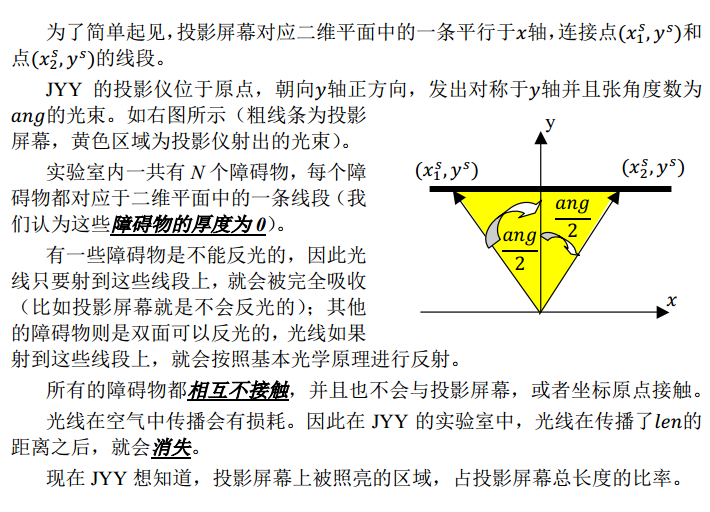
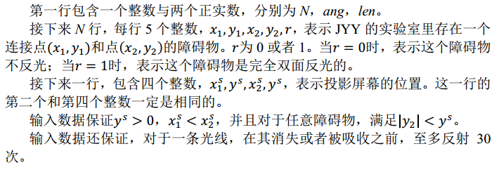
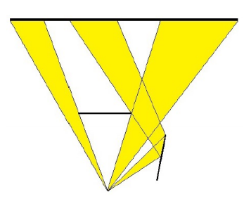

输出一行包含一个0到1之间的实数，表示屏幕上被照亮部分的长度与屏幕 总长的比值。 结果精确到小数点后4位。
2 150.0000 1000.0000 -60 165 50 165 0 110 25 130 120 1 -205 360 275 360
0.7443
0 < = N < = 10, 0 < ang < = 150, 0 < Len < = 1000， 并且任意输入坐标的绝对值不超过 1000。
样例图解如下
